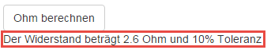

Benutzeranleitung
-
Die Webseite http://elektroag.neocities.org/ aufrufen
-
Anzahl Ringe auswählen, für die der Wiederstand berechnet werden soll
-
Auf den schatten des Ringes klicken, bei welchem die Farbe ausgewählt werden soll
-
Nun die Farbe des Ringes anklicken
-
Wenn für jeden Ring eine Farbe ausgewählt wurde, mit "Ohm berechnen" bestätigen

-
Nun wird das Resultat unter dem Button "Ohm berechnen" dargestellt

FAQ
Wenn ich "Ohm berechnen" klicke erscheint der Fehler "Error: Farbe Fehlt"
Dieser Fehler tritt auf Wenn eine Farbe nicht ausgewählt wurde, um diesen Fehler zu beheben, muss jedem Ring eine Farbe zugeordnet werden.
Was Bedeuten die einzelnen Ringe?
Die einzelen Ringe 1-3 ergeben die Zahlen, der 4. Ring die Anzahl Nullen und der 5. Ring die Tolleranz in %.
Die Werte können jeweils aus der folgenden Matrix herausgelesen werden:
Beispiel:
"Braun, Blau, Grau, Rot, Silber"
"1, 6, 8, 2, 10%"
168 und 00 mit 10% Tolleranz
16800 Ohm mit 10% Tolleranz
Wenn ich auf den Ring klicke, um eine Farbe auszuwählen, passiert nichts
Dies kann daran liegen, dass JavaScript deaktiviert ist.
JavaScript kann meist in den Browsereinstellungen aktiviert werden.